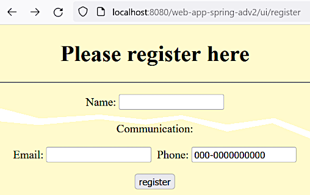

Form validation
Form validation
Form validation
Mar 27, 2023
[2.8]
Why we need a server side validation rather than client side one? If we add a simple validation
in JavaScript like this (see the home-page.jsp file):
<script type="text/javascript">
function validateUserName() {
if (document.getElementById("name1").value.length > 1) {
return true
} else {
alert("The user name must be at least 2 character long!")
return false
}
}
</script>
. . .
<form action="calculate-page-dto" method="GET" onsubmit="return validateUserName()">
. . .This validation rule will work but a user may easily break it using, e.g., a debugger tool in their browser.
So we need to perform validation on the server where users cannot manipulate the code.
Git commit:
ecc1819727ac509d8be35d521787c5e0b13b7953client-side validation
Bean validation API 2.0 (JSR-380) is used. The previous versions are JSR-303 and JSR-349. For more details about JCP see here. Also see [13].
The JSR-380 standard is supported by Spring starting from version 5.2.
We are going to use Hibernate validator, version 6.0+. See [14] for the implementations discovered so far.
For this demonstration we create separate artifacts:
ValidatedControllerUserInfoValidatedDto
(probably with not a good name)home-page-validated.jspNeed to add the following dependencies to the POM:
. . .
<dependency>
<groupId>javax.validation</groupId>
<artifactId>validation-api</artifactId>
<version>2.0.1.Final</version>
</dependency>
<dependency>
<groupId>org.hibernate</groupId>
<artifactId>hibernate-validator</artifactId>
<version>8.0.0.Final</version>
</dependency>
. . .The first one is just a set of interfaces. The second one is a concrete implementation (Hibernate). Without the later dependency validation will not work.
Note
@EnableWebMvc annotation must be activated on the configuration to activate validation,
see the MyApplicationConfig
class.
After validation is activated the following lines are output to the log when the server starts:
Mar 27, 2023 12:24:29 AM org.hibernate.validator.internal.util.Version <clinit>
INFO: HV000001: Hibernate Validator 6.1.6.FinalValidation rules are defined in the DTO:
. . .
@NotBlank(message = " * can't be blank")
@Length(min = 3, message = " * must have at least 3 characters")
private String name1;
. . .Note
See [13] for more validation rules like @Email, @Past, @Future etc.
The controller has the following controller methods:
. . .
@RequestMapping("/validate")
public String showHomePageSpring(@ModelAttribute("dto") UserInfoValidatedDto dto) {
return "home-page-validated";
}
@RequestMapping("/validate-submit")
public String showCalculatePageSpring(@Valid @ModelAttribute("dto") UserInfoValidatedDto dto,
BindingResult result) {
if (result.hasErrors()) {
result.getAllErrors().forEach(System.out::println);
return "home-page-validated";
}
return "result-page-spring";
}
. . .
The @Valid annotation states that the DTO must be valid according to the rules defined in it.
The BindingResult object provides access to the validation errors. Were in case of errors we
return the same form page preventing the next page to be shown. The debug print outputs
information like this:
Field error in object 'dto' on field 'name1': rejected value []; codes [Length.dto.name1,Length.name1,Length.java.lang.String,Length]; arguments [org.springframework.context.support.DefaultMessageSourceResolvable: codes [dto.name1,name1]; arguments []; default message [name1],2147483647,3]; default message [ * must have at least 3 characters]
Field error in object 'dto' on field 'name1': rejected value []; codes [NotBlank.dto.name1,NotBlank.name1,NotBlank.java.lang.String,NotBlank]; arguments [org.springframework.context.support.DefaultMessageSourceResolvable: codes [dto.name1,name1]; arguments []; default message [name1]]; default message [ * can't be blank]The JSP form looks like this:
. . .
<form:form action="validate-submit" method="GET" modelAttribute="dto">
<p><label for="name1">Name 1: </label><form:input id="name1" path="name1"/>
<form:errors path="name1"/></p>
<p><label for="name2">Name 2: </label><form:input id="name2" path="name2"/></p>
<input type="submit" value="calculate"/>
</form:form>
. . .The <form:errors path="name1"/> element outputs the list of errors (if any) for the specified
field.
Git commit:
764155fd65a55162d5e23e6501eb4cd1bdbc11edserver-side form validation implemented
The URL is http://localhost:8080/web-app-spring-adv2/ui/validate:

This snapshot was taken after the following styling is done.
The following commit makes the form look a little bit better.
Git commit:
bab5cc787395af429e3bad90239a3b6f2ee4264bform styling performed
The discussed approach is useful for avoiding expensive and time consuming interactions and calculations. Still this guarantees that the validation will be done even if the used breaks the validation rules in a browser. It's not going to be reproduced, see here to have the main idea of the solution.
Another checkbox "I am not a robot" added and the other input field is validated.
Git commit:
b5a88ff0cdb251e3f4480bd6fabba3c8cc7f440ffinal steps
If when using the @Size annotation we don't specify the message argument then the default
message, like "size must be between 3 and 10", will be used. Some hints about the way it works
may be found in the following files:
validation-api-2.0.1.Final.jar!/javax/validation/constraints/Size.class:13 see the
javax.validation.constraints.Size#message method definition;hibernate-validator-6.1.6.Final.jar!/org/hibernate/validator/ValidationMessages.properties:22
where the following property is defined:
javax.validation.constraints.Size.message = size must be between {min} and {max}As it's implemented this way, we can use parameters like {min} and {max} in our messages like this:
@Size(min = 3, max = 10, message = " * must have from {min} to {max} characters")Git commit:
2e827339401f29efb950b8ae912f46124d4dad9avalidation messages customization investigated
Mar 27, 2023
[2.10]
Note
This part of development is being done after some additional fields ("Age", "Email", "Phone") are added to the registration form. See here.
So far we used the Hibernate implementation of validators (also see here). Now we are going to implement our custom validator constraint.
The following form will be used for demonstration:

The "Phone" field will be validated. The rules are:
null is not allowed First implement a simpler @AgeValidator. Existing validators code is investigated in this part
of the video. The coding itself is going to be started after the following time stamp.
Creating the @Age
annotation:
@Documented
@Retention(RetentionPolicy.RUNTIME)
@Target(ElementType.FIELD)
@Constraint(validatedBy = AgeValidator.class)
public @interface Age {
String message() default "Age should be between {lower}-{upper}";
int lower() default 18;
int upper() default 60;
java.lang.Class<?>[] groups() default {};
java.lang.Class<? extends javax.validation.Payload>[] payload() default {};
}The groups() and payload() fields are copied from the existing
@javax.validation.constraints.NotBlank annotation.
Creating the AgeValidator
validator class:
public class AgeValidator implements ConstraintValidator<Age, Integer> {
private int lower;
private int upper;
@Override
public boolean isValid(Integer age, ConstraintValidatorContext constraintValidatorContext) {
return age != null && age >= this.lower && age <= this.upper;
}
@Override
public void initialize(Age age) {
this.lower = age.lower();
this.upper = age.upper();
}
}In the RegistrationDto
DTO class adding the newly created annotation to the field age:
. . .
@Age(lower = 20, upper = 70, message = "should be between {lower} and {upper}")
private Integer age;
. . .As the ConstraintValidator interface cannot accept primitive type parameters, changing the age
field type from int to Integer.
Editing the RegistrationController
corresponding controller method:
@RequestMapping("/registration-success")
public String processUserRegistration(@Valid @ModelAttribute("userReg") RegistrationDto userReg,
BindingResult result) {
if (result.hasErrors()) {
return "registration-page";
}
return "registration-success";
}
}Updating the registration-page.jsp
view to make it show the error messages:
</p><label for="age">Age: </label><form:input id="age" path="age"/>
<form:errors path="age" cssClass="error"/></p>By the URL http://localhost:8080/web-app-spring-adv2/ui/register we can confirm that the "Age" field is validated.
Git commit:
b0c9041b5224fdc73eb96b051423520f80bc0dafcustom validator is applied to the "Age" field